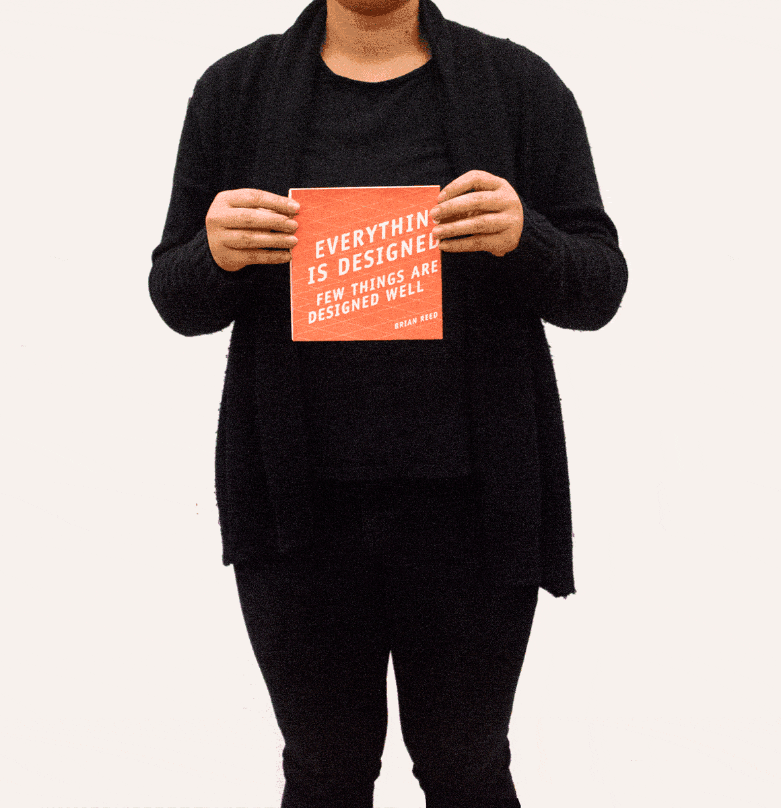

A foldable informational narrative
A mailable pamphlet meant to give prospective students, parents, and guidance counselors a general overview of the design program at CMU and what sets it apart from other schools.
A limited color scheme, a font with large counters, and half toned images all accomodate the quality of newsprint. Copy and content creation was guided by the School of Design website and interviews with current students about what interested them about CMU.